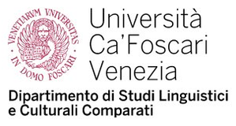
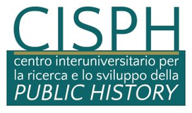
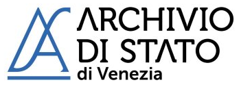
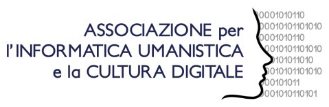
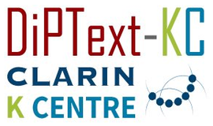
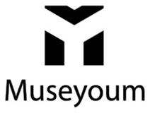
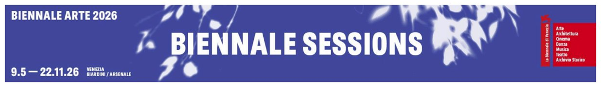
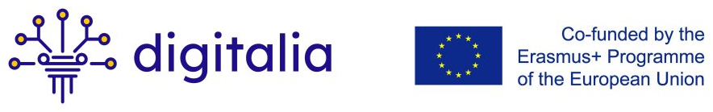

Organising university & departments
Ca’ Foscari University of Venice
The summer school is organised by the Venice Centre for Digital and Public Humanities (VeDPH). It is funded by the Department of Linguistics and Comparative Cultural Studies and the Department of Humanities.


Partners & supporting institutions
Partners

CISPH — Centro Interuniversitario per la Public History
Archivio di Stato di Venezia Istituto di Linguistica Computazionale «A. Zampolli», CNR
Istituto di Linguistica Computazionale «A. Zampolli», CNR
AIUCD — Informatica Umanistica e Cultura Digitale
DiPText-KC — CLARIN Knowledge Centre
Museyoum
La Biennale di Venezia — Biennale SessionsFunded by
Erasmus+ · DIGITALIA

«DIGITALIA: Digital Solutions for Sustainable and Disaster Resilient Heritage Management» — Erasmus+ Programme of the European Union (2024-1-TR01-KA220-VET-000251597). Funded by the European Union. Views and opinions expressed are however those of the author(s) only and do not necessarily reflect those of the European Union or the European Education and Culture Executive Agency (EACEA). Neither the European Union nor EACEA can be held responsible for them.